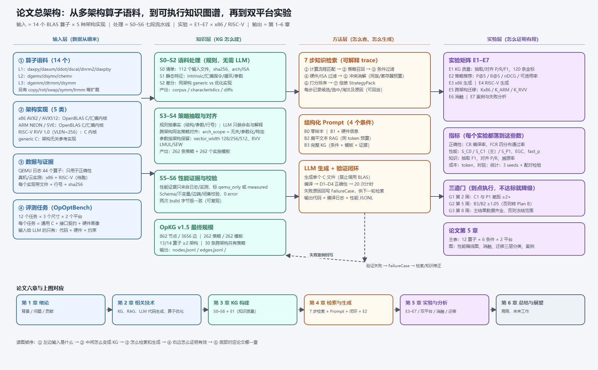
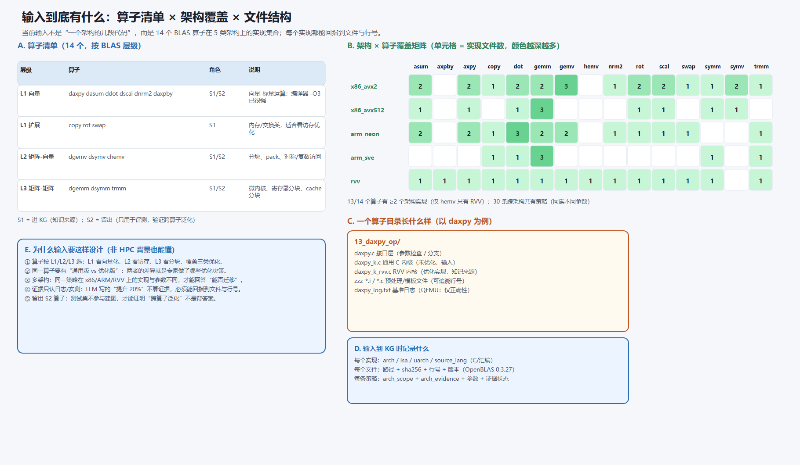
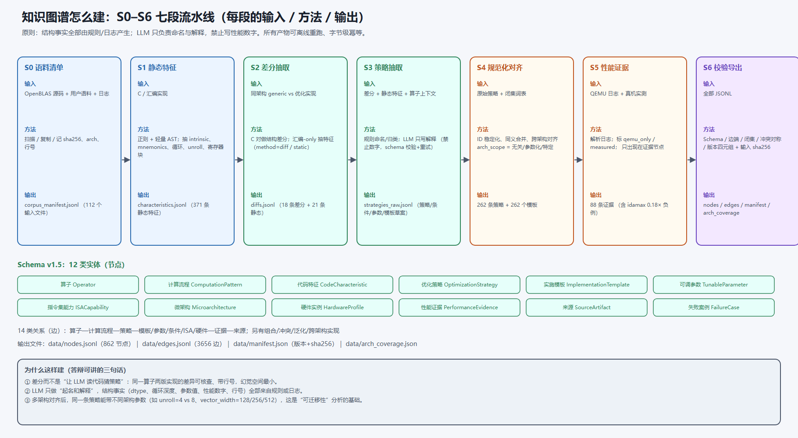
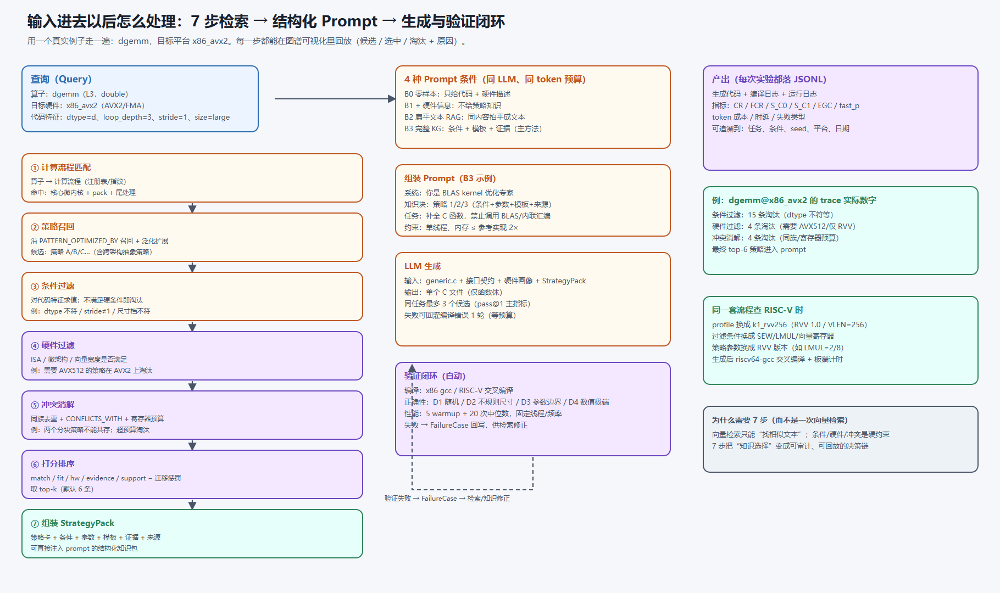
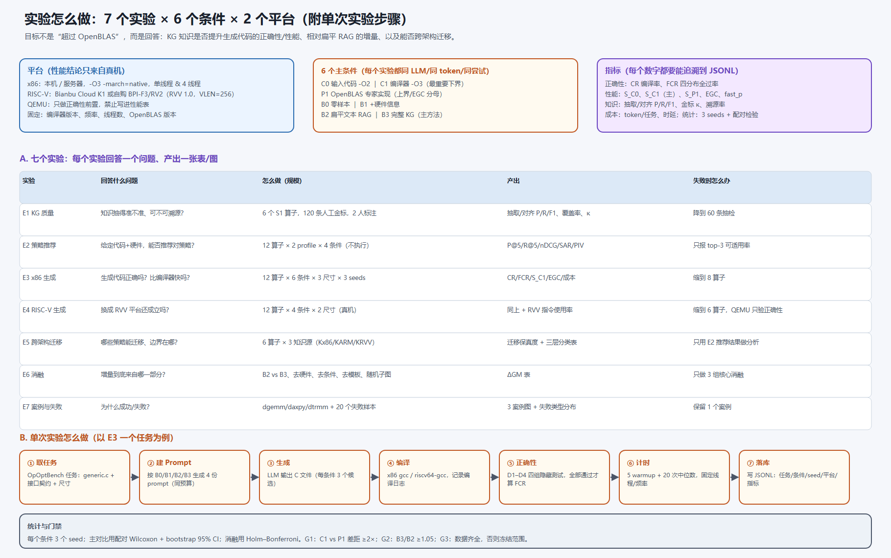
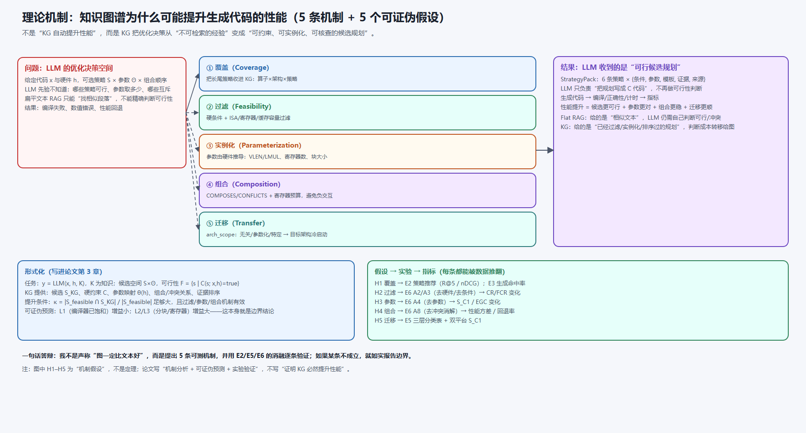

图 1论文总架构（先看这张）
四层从左到右：输入层 → 知识层 → 方法层 → 实验层；底部一行是论文六章与四层的对应。

读图顺序：左边输入是什么 → 中间怎么变成 KG → 中右怎么检索和生成 → 右边怎么证明有效 → 底部对应论文哪一章。
图 2输入到底有什么：算子清单 × 架构覆盖 × 文件结构
14 个 BLAS 算子 × 5 类架构实现；S1 进 KG、S2 留出；一个算子目录的文件结构。

图 3知识图谱怎么建：S0–S6 七段流水线
每段的输入 / 方法 / 输出；Schema v1.5 的 12 类实体；最终 862 节点 / 3656 边。

原则：结构事实全部由规则/日志产生；LLM 只负责命名与解释，禁止写性能数字。
图 4输入进去以后怎么处理：7 步检索 → Prompt → 生成闭环
用 dgemm @ x86_avx2 的真实例子走一遍；条件过滤淘汰 15 条、硬件过滤淘汰 4 条、冲突消解淘汰 4 条。

图 5实验怎么做：7 个实验 × 6 个条件 × 2 个平台
每个实验回答一个问题、产出一张表/图；单次实验七步；指标与三道门。

图 6理论机制：KG 为什么可能提升性能（5 条机制 + 5 个可证伪假设）
覆盖 → 过滤 → 参数实例化 → 组合冲突 → 跨架构迁移；每条机制对应一个可测假设与实验消融。

配套文字：../15_理论论证与工作量说明.md（形式化、假设判定标准、创新点、工作量清单、答辩话术）。
一句话版本
输入14 个 BLAS 算子 × 5 类架构实现（x86 AVX2/AVX512、ARM NEON/SVE、RISC-V RVV）+ 通用 C + 日志。
处理S0–S6 把“同一算子两版代码的差异”变成带条件、参数、模板、证据、来源的策略知识图谱（862 节点 / 3656 边）。
方法7 步检索（可回放）→ StrategyPack → B0–B3 四条件 Prompt → LLM 生成 → 编译/正确性/计时闭环。
实验12 算子 × 6 条件 × 2 平台；主指标 FCR、S_C1、B3/B2；三道门 G1–G3，不达标转 Plan B。
文字详解（含术语表、指标公式、每步为什么）见 README.md；图的可编辑 SVG 与生成脚本同目录。